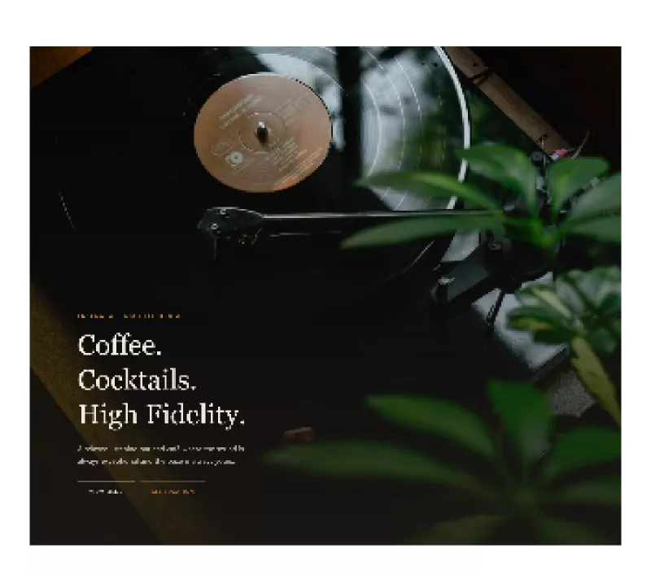

Computer systems · cloud infrastructure · web & digital
Oscar Canizales
I’m Oscar — a San Diego–based computer engineer who’s happiest when the systems stay up. These days I teach kids robotics and circuits at Brains and Motion, and keep the lab stocked and the schematics honest as a project‑space officer with IEEE at UC San Diego. Before that I ran end‑to‑end IT for Prime Networks. On my own time I build AI lead‑generation tools, quant trading bots, and self‑host my own infrastructure on a small pile of Raspberry Pis — and I don’t trust a system until I’ve watched it break. I like my commits small, my servers quiet, and my documentation actually written.
01 / EXPERIENCE
A little history.
Roles where uptime, documentation, and people all had to hold at once. Tap a row for detail.
Work
-
- Ran end-to-end technical operations, balancing client relationships with day-to-day system administration.
- Isolated hardware and network faults through systematic diagnostics, performing critical repairs to hold system uptime.
- Authored authoritative documentation of procedures and configurations for multi-user operations.
- Marketed IT services and secured contracts for hardware and network diagnostics.
-
- Instruct students in robotics and electrical principles, translating complex ideas into practical lessons.
- Guide hardware-prototyping workshops and mentor students through circuit troubleshooting.
- Manage laboratory inventory and logistics for engineering project materials.
-
- Oversee laboratory project-space infrastructure, maintaining component inventories and equipment availability for student projects.
- Provide technical guidance to peer engineers — schematic debugging and component selection.
Learning & certifications
- 2024–28 UC San DiegoComputer Engineering — ADT transfer path
- 2025 QualcommAI Upskilling: Technical Foundations
- 2024 Calexico High SchoolCTE: Marketing, Sales & Services · Entrepreneurship
- — AlisonDiploma for Electrical Studies (verified)
02 / PROJECTS
Things I’ve built.
Systems I run and client sites I’ve shipped. Open one for the details.
Systems & software
-
Problem
Fast prediction markets and futures punish slow, emotion-driven decisions. I wanted execution that was systematic and backtested, with every strategy proven out before it saw real capital.
Approach
Built two engines in Python: one trading Polymarket BTC up/down markets with a statistical-arbitrage layer, the other running stocks and futures through the Webull OpenAPI on Lucid/Rithmic data feeds. Both share whale-tracking, live dashboards, and a walk-forward backtester plus optimizer that validates a strategy before any capital is committed.
Results
- Best validated momentum combo returned +0.72R per trade with a 2.55 profit factor in walk-forward testing.
- An 8-year walk-forward flagged the statistical-arbitrage strategies as non-robust, so they were kept to paper trading only.
- Two independent engines run off one shared validation and dashboard layer, so no strategy goes live unvalidated.
Python · Polymarket API · Webull OpenAPI · Statistical arbitrage · Backtesting
-
Problem
I wanted always-on private services that I fully owned, and a real environment to learn cloud fundamentals rather than a sandbox that resets when I close it.
Approach
Built a homelab on Fedora Linux with Raspberry Pi nodes, running self-hosted services behind a reverse proxy. Added monitoring and automated backups, and treated the whole setup as documented, reproducible infrastructure.
Results
- Always-on private services with end-to-end system-administration ownership.
- A live sandbox for cloud fundamentals — networking, uptime, and diagnostics under real load.
Fedora Linux · Raspberry Pi · System administration · Networking · Bash
-
Problem
Selling web design means finding the businesses that don't have a website yet, which are exactly the prospects that are hardest to surface by hand. I wanted a tool that pulled them automatically and told me which ones were actually worth contacting.
Approach
Built a FastAPI and SQLite service with a vanilla-JavaScript dashboard that pulls candidate businesses from Google Places, OpenStreetMap, and Reddit. An LLM (Claude) identifies and qualifies the ones with no website and streamlines the outreach step. Runs locally on port 8820.
Results
- Merges three independent sources (Google Places, OpenStreetMap, Reddit) into one qualified lead list.
- Uses Claude to flag no-website prospects and prep outreach, so I contact only real leads.
- Productized version of my earlier AI-powered lead-generation system.
Python · FastAPI · SQLite · JavaScript · Google Places API · Claude/LLM
-
Problem
My IT and web-design clients live scattered across email threads, notes, and the Leadscout lead pipeline, with no single place to track who needs a follow-up. I wanted one system for contacts, deal stages, and reminders that the Leadscout lead flow could feed into directly.
Approach
A self-built CRM on the same stack I use across these projects: a FastAPI backend over a SQL datastore, with a lightweight JavaScript frontend. The core model is contacts, deal stages, notes, and reminders, so a lead can move from first contact to closed work in one place. Leadscout is meant to write new leads straight in, rather than dumping them somewhere I have to re-key by hand.
Goals
- Will give the Leadscout lead flow a home, turning raw leads into tracked contacts and deal stages.
- Aims to centralize follow-ups, notes, and reminders so client work stops slipping between tools.
- Will run self-hosted on the same Python / FastAPI / SQL stack as the rest of the portfolio.
Python · FastAPI · SQL · JavaScript
-
Problem
Producing highlight clips by hand meant sourcing footage, reviewing it, and cutting each segment before anything could go out. I wanted the full path from raw footage to publish-ready video to run without manual work in the loop.
Approach
Built a Python pipeline that scrapes source video, filters and curates it against selection rules, then cuts and encodes the clips with ffmpeg. API integration ties the sourcing and publishing stages into one repeatable, hands-off workflow.
Results
- End-to-end automation: raw footage in, publish-ready video out, no manual editing between stages.
- Repeatable, reproducible runs with standardized ffmpeg output.
Python · ffmpeg · Web scraping · Automation · API integration
Digital marketing & web
-
Problem
RADCO Construction needed a commercial site that surfaced in local search instead of sitting invisible. I wanted the rebuild to earn organic traffic on its own rather than lean on paid placement.
Approach
Designed and deployed the site on WordPress with hand-tuned HTML/CSS, then reworked the site architecture and metadata around current SEO best practices. Wired in analytics to see what search actually rewarded.
Results
- Improved local search visibility through a cleaner site architecture and complete metadata.
- Structured the site to drive organic traffic rather than paid placement.
- Analytics in place to track search performance over time.
WordPress · HTML/CSS · SEO · Site architecture · Analytics
-
Problem
A family law practice needs its site to turn search traffic into consultations. I wanted pages that loaded fast, guided prospective clients to the right place, and captured inquiries without friction.
Approach
Developed and maintained the practice's platform on WordPress at imperialfamilylaw.com, structuring navigation around the services prospective clients look for and tuning page performance and SEO. Wired secure lead-capture forms into the contact flow so inquiries reached the practice cleanly.
Results
- Live WordPress platform serving the practice at imperialfamilylaw.com.
- Secure lead-capture forms routing prospective-client inquiries to the firm.
- Navigation and page performance tuned for search visibility.
WordPress · HTML/CSS · SEO · Lead-capture forms
-
Problem
Design ideas stay cheap and ambiguous until someone can click through them. I wanted high-fidelity, interactive prototypes that showed exactly how a web app would look and behave before any code got written.
Approach
Built interactive UI/UX prototypes in Figma across two efforts. Inter-Amity was a comprehensive design system and layout — shared components and page structure meant to be reused rather than redrawn. Crane HIFI Bar was a set of responsive web layouts built around brand identity and the end-user experience.
Results
- Inter-Amity: a comprehensive design system and layout defining shared components and page structure.
- Crane HIFI Bar: responsive web layouts focused on brand identity and user experience.
- Both delivered as high-fidelity, clickable Figma prototypes.

Figma · UI/UX design · Design systems · Prototyping
03 / STACK
The tools I reach for.
Hover a skill to see which projects it shows up in.
Languages
Systems & infrastructure
Integration & automation
Digital marketing & web
Hardware & EDA
04 / CONTACT
Work with me.
I’m open to roles and collaborations in computer systems, cloud infrastructure, and web & digital work. If you’ve got a system that needs building — or one that keeps falling over — I’d love to hear about it.